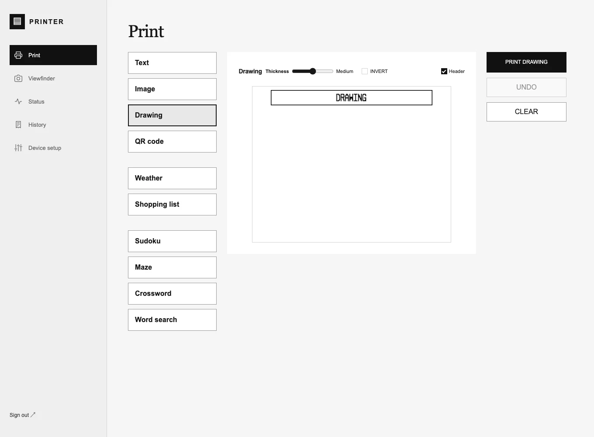

Technical Documentation
Printer
A small thermal printer for everyday paper objects. Notes, drawings, photographs, forecasts, lists, and puzzles — from a browser to a strip of paper.
Password required. The live interface sends jobs to a physical printer.

The Idea
A receipt printer can make more than receipts. A forecast to take outside, a list to put in a pocket, a puzzle to leave on a table, or a drawing to give away: small pieces of information become useful objects when they leave the screen.
The project pairs a QR204 thermal printer with a classic ESP32 / ESP-WROOM-32 and a browser interface. The same workspace can run on the device, through a Mac connection, or through an authenticated remote relay. The browser handles composition and previews; the embedded print core turns the result into the printer’s native text or monochrome raster commands.
What It Prints
- Text: short notes with typography controls, a receipt preview, and optional timestamps.
- Images: photographs prepared for a one-bit thermal print head with cropping and dithering.
- Drawing: draw on the paper preview with adjustable pen thickness and inversion.
- QR codes: turn a link or text into a printable code with a custom heading.
- Weather: a city forecast with hourly temperature charts and a five-day outlook.
- Shopping lists: a simple title, checkboxes, and wrapped items.
- Puzzles: Sudoku, mazes, mini crosswords, and themed word searches, with explicit solution printing.
Modules share the paper preview, print controls, and job tracking. Puzzle generation happens in the browser; weather is loaded on request. Drafts and preferences stay in that browser’s local storage.
One Interface, Three Connections
On the local network
The ESP32 serves the interface directly over Wi-Fi. Local control includes printing, live device status, job history, setup, and application-only firmware updates from the browser.
From the Mac
A local Python bridge serves the current interface and forwards jobs to the physical printer. A separate simulator uses the shared C++ print core so text encoding and image processing can be exercised before touching the device.
From elsewhere
The password-protected live interface submits jobs to a server-side queue. The ESP32 contacts the relay over outbound, certificate-validated HTTPS to collect work and report progress. The device does not need an incoming public network connection. Remote controls are limited to printing and status; device setup and firmware updates stay local.
From Preview to Paper
The QR204’s 384-dot print width shapes the whole interface. Native text uses the printer’s own character commands; styled content and graphics become packed monochrome bitmaps. Image processing and the device’s paper geometry correction are handled explicitly so a browser preview can map to the physical output.
Long raster jobs upload in bounded, ordered chunks and are checked with SHA-256 before committing. One job ID follows a receipt through the queue and transmission. An uncertain delivery is not automatically retried, avoiding an accidental second print.
Status distinguishes queued work, activity, stale connections, and transmission progress. “Sent to printer” describes data transmission; the hardware does not independently confirm that a finished receipt emerged on paper.
Compose on the Mac
The Mac interface also has a receipt composer: add independent text, weather, list, QR, puzzle, drawing, and image sections to one continuous strip. Sections can be edited, duplicated, and reordered, with per-section headings and adjustable spacing. The complete receipt is submitted as one raster job.
Compose is currently a Mac-interface feature. The embedded and hosted interfaces provide the individual Print modules.
Architecture
web/ TypeScript workspace, previews, and printable modules core/ Portable C++ text, raster, and dither implementation firmware/ ESP32 device server, UART output, status, and updater simulator/ Python server with SQLite-backed simulated jobs shared/ API contract across device, simulator, and bridge scripts/ Mac bridge, development loop, and release tooling tests/ Core, API, browser, and transfer checks
The interface is shared across environments while hardware capabilities remain explicit. A camera or SD feature appears only when the configured hardware supports it; the current classic ESP32 build does not claim the earlier camera proposal as an installed feature.
Tech Stack
| Hardware | QR204 thermal printer, classic ESP32 / ESP-WROOM-32, UART at 9600 baud |
| Firmware | Arduino-ESP32 and PlatformIO, with a portable C++ print core |
| Interface | TypeScript, Vite, HTML, CSS, and Canvas-based raster previews |
| Mac tools | Python bridge and simulator, SQLite job storage |
| Remote printing | Authenticated PHP relay, durable queue, outbound HTTPS delivery |
| Raster transfer | Chunked uploads, SHA-256 verification, one ID per job |
Current Build
Firmware 1.8.4 is installed on the classic ESP32. The working system includes local and remote printing, the shared Print modules, live readiness and transmission status, and a Mac development loop. Weather and Sudoku output have been physically confirmed on the printer. The enclosure, battery runtime, and camera remain separate hardware work.